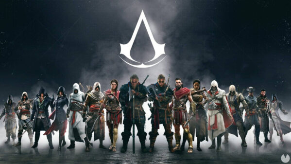

Roberto de Sablé

Líder de los Caballeros Templarios durante la Tercera Cruzada, es el principal antagonista de Altaïr en el primer juego.
Rodrigo Borgia

El Gran Maestre de los Templarios y antagonista principal en Assassin's Creed II y Brotherhood.
Charles Lee

Charles Lee (Assassin's Creed III): Oficial británico y mano derecha del Templario Haytham Kenway, es el principal antagonista de Connor durante la Revolución Americana.
templarios
Templarios (toda la saga): La Orden de los Templarios es el gran antagonista recurrente de la saga Assassin's Creed, buscando controlar a la humanidad a través del poder y la manipulación a lo largo de la historia.